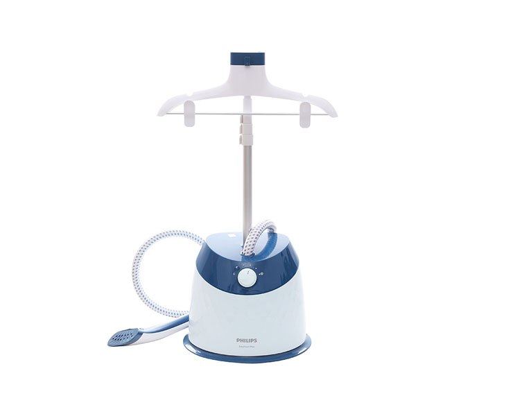
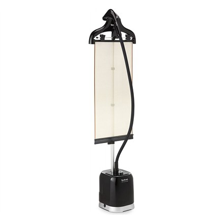
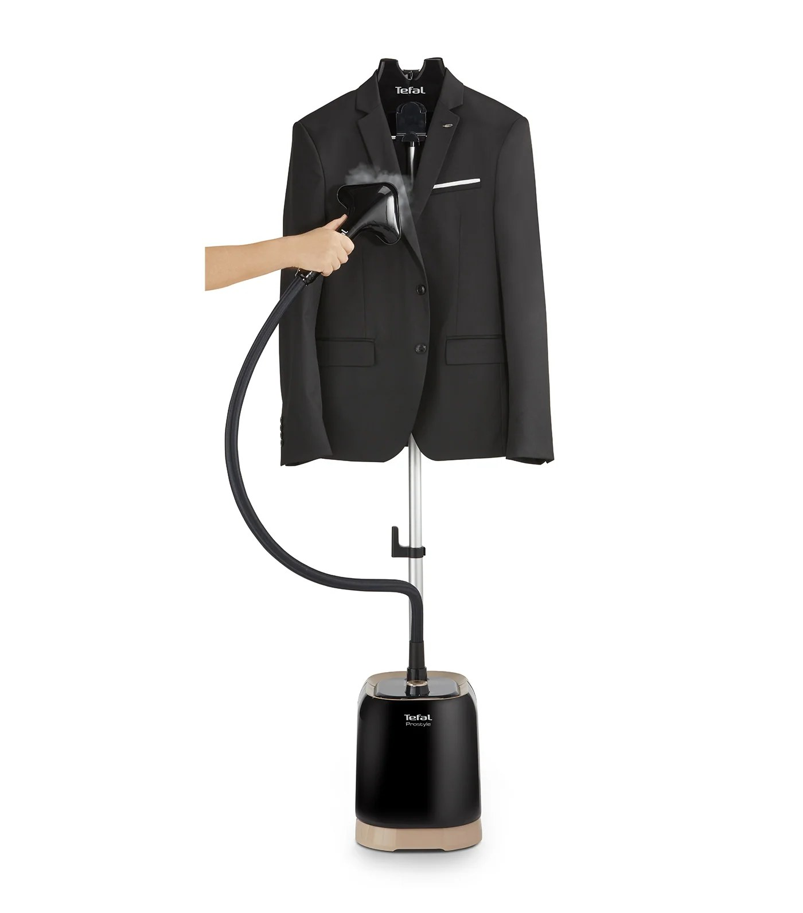
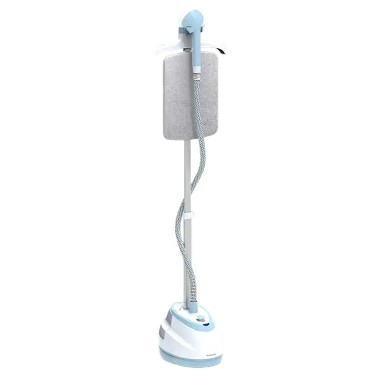
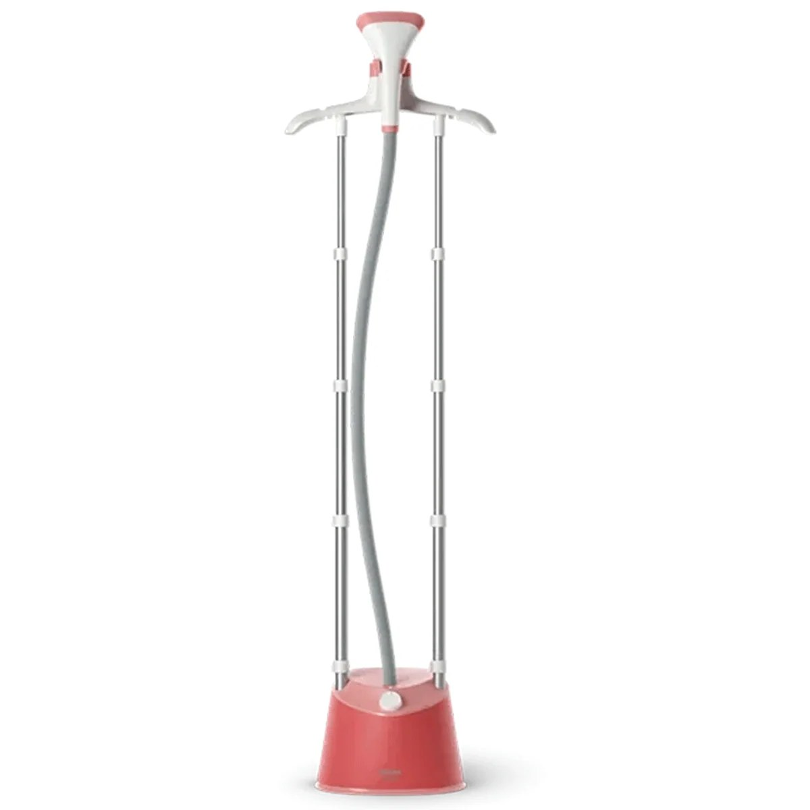

Buổi sáng đi làm, áo sơ mi lấy từ tủ ra nhăn nhúm là cảnh quen thuộc của rất nhiều nhà. Bàn ủi thường ủi phẳng tốt nhưng phải bày cầu ủi và ủi từng mặt. Bàn ủi hơi nước đứng giải quyết đúng việc đó: treo áo lên móc, lướt đầu hơi vài lượt là mặc được. Nhưng có một giới hạn phải nói trước: máy đứng ủi nhanh đồ treo, nhưng không tạo được ly quần sắc như bàn ủi mặt đế nóng. Quần tây xếp ly vẫn cần bàn ủi thường, trừ khi máy có kẹp tạo ly đi kèm.
5 mẫu dưới đây mình lọc từ hàng chục mẫu đang bán, thông số đối chiếu từ ít nhất 2 nguồn bán lẻ hoặc hãng công bố. Giá tham khảo ghi nhận ngày 23/10/2026 từ các kênh còn hiển thị giá trực tiếp (Nguyễn Kim, Hasaki, CellphoneS); riêng nhóm Tefal và Sunhouse, giá trực tiếp ngày 23/10 không hiện đầy đủ nên bài giữ khoảng giá ghi nhận ngày 11/10/2026. Bạn nên so giá lại trước khi mua vì giá sale biến động nhanh.
Cách chọn bàn ủi hơi nước đứng trong 1 phút
Không cần nhớ nhiều, chỉ cần 6 gạch đầu dòng này khi đi mua:
- Lưu lượng hơi (g/phút) quan trọng hơn công suất W. Máy 1600W phun 32g/phút ủi nhanh hơn nhiều máy 1800W hơi yếu. Ngưỡng ngon là từ 30g/phút trở lên.
- Bình 1.5–1.8L là điểm ngọt, đủ ủi 6–10 áo mỗi lần châm. Bình to hơn thì máy cồng kềnh, khó cất.
- Thời gian nóng dưới 60 giây. Máy nóng 35–45 giây thì buổi sáng ủi 2 cái áo không còn là việc ngại làm.
- Phải có xả cặn hoặc chống đóng cặn, nếu không nước máy nhiều khoáng sẽ làm tắc vòi hơi sau vài tháng.
- Trụ và móc treo phải chắc, trụ chỉnh được độ cao, chịu được vest nặng. Máy 2 trụ vững hơn máy 1 trụ khi ủi đồ dài.
- Bảo hành hãng tại Việt Nam: Philips và Tefal 24 tháng, Sunhouse 12 tháng. Cảnh giác shop chỉ bảo hành shop mà ghi chung là "bảo hành".
So sánh nhanh 5 mẫu
| # | Mẫu | Công suất | Bình nước | Hơi liên tục | Nóng | Bảo hành | Giá tham khảo |
|---|---|---|---|---|---|---|---|
| 1 | Philips GC518/29 | 1600W | 1.6L | 32g/phút | 60 giây | 24 tháng | ~1,5–2,1tr |
| 2 | Tefal IT3440E0 | 1550–1850W | 1.5L | 30–35g/phút* | 45 giây | 24 tháng | ~2,49tr |
| 3 | Tefal IT3420E0 | 1550–1850W | 1.5L | 30g/phút | 45 giây | 24 tháng | ~1,75tr |
| 4 | Sunhouse SHD2109 | 1800W | 1.6L | 32g/phút | 35 giây | 12 tháng | ~1,09–1,12tr |
| 5 | Philips STE1020/40 | 1800W | 1.8L | 36g/phút | 45 giây | 24 tháng | ~1,36–1,49tr |
* IT3440E0: Điện Máy Xanh ghi 35g/phút, bảng thông số hãng trên Icecat ghi 30g/phút. Bài này ghi cả hai để bạn khỏi bị sốc khi thấy hai con số khác nhau ở hai nơi bán.
1. Philips GC518/29 — "quốc dân", giá mềm nhất dòng Philips đứng

Giá tham khảo: khoảng 1.500.000–2.100.000đ (chênh lớn giữa các kênh, xem kỹ bên dưới)
Đây là con máy mình gợi ý đầu tiên cho đa số gia đình, vì nó cân bằng nhất: 1600W, bình 1.6L tháo rời, phun hơi liên tục 32g/phút, nóng trong 60 giây, 5 chế độ hơi xoay núm cho từng loại vải. Mặt đế silicon lớn hơn 25% so với đời trước, đi kèm găng tay cách nhiệt, bàn chải vải cho đồ dày, và quan trọng nhất là kẹp tạo ly. Nhờ cái kẹp này mà GC518 là một trong số ít máy đứng xử lý được ly quần ở mức chấp nhận được, dù vẫn không sắc bằng bàn ủi thường.
Điểm cần lưu ý nhất là giá chênh rất lớn giữa các kênh: shop nhỏ rao quanh 1,5 triệu, Nguyễn Kim niêm yết 2.099.000đ. Bạn bắt buộc phải so giá và kiểm tra bảo hành hãng 24 tháng trước khi chốt. Máy còn có xả cặn Easy De-Calc và tự về chế độ chờ khi cạn nước.
- Hơi 32g/phút, ủi nhanh dù chỉ 1600W
- Có kẹp tạo ly, găng tay, bàn chải vải đi kèm
- Xả cặn Easy De-Calc, tự chờ khi cạn nước
- Bảo hành hãng 24 tháng
- Giá chênh lớn giữa các kênh, phải so giá kỹ
- Nóng 60 giây, chậm hơn nhóm 1800W
Hợp với ai: gia đình cần một máy đứng làm được nhiều việc nhất trong tầm giá, thỉnh thoảng vẫn cần ủi ly quần.
Xem giá tốt nhất trên Shopee →2. Tefal IT3440E0 — bản cao của Tefal, nóng nhanh nhất nhóm Tefal

Giá tham khảo: khoảng 2.490.000đ (giá ghi nhận 11/10/2026, ngày 23/10 trang Điện Máy Xanh không hiện giá bán lẻ trực tiếp)
IT3440E0 là bản cao cấp trong dòng ProStyle của Tefal, và điểm ăn tiền nhất nằm ở cái màn vải cứng Press & Steam đi kèm. Thay vì ủi áo treo tự do hay bị đung đưa, bạn kẹp áo vào màn vải này, mặt đế tỳ lên vải và lướt như ủi trên một mặt phẳng đứng. Với sơ mi và vest, cách này cho đường ủi gọn hơn hẳn kiểu ủi treo tự do. Máy nóng chỉ 45 giây, bình 1.5L ủi được 7–10 áo mỗi lần châm, mặt đế kim loại lớn truyền nhiệt nhanh, có chống đóng cặn và bàn chải vải đi kèm.
Về thông số: Điện Máy Xanh ghi hơi phun 35g/phút, bảng thông số hãng trên Icecat ghi 30g/phút. Mình ghi cả hai vì cả hai đều xuất hiện ở nguồn đáng tin. Điểm trừ lớn nhất là giá: đắt nhất danh sách, gần gấp rưỡi IT3420E0 mà cùng bình 1.5L.
- Nóng 45 giây, ủi ngay không phải chờ
- Màn vải Press & Steam cố định áo, ủi gọn hơn
- Mặt đế kim loại lớn, chống đóng cặn
- Bảo hành hãng 24 tháng
- Đắt nhất danh sách, ~2,49 triệu
- Thông số hơi phun ghi khác nhau giữa các nguồn
Hợp với ai: người hay mặc sơ mi và vest, muốn đường ủi gọn nhất có thể từ một máy đứng và không ngại trả thêm cho màn vải ép.
Xem giá tốt nhất trên Shopee →3. Tefal IT3420E0 — tầm trung, mặt đế kim loại, giá dễ chịu hơn hẳn bản cao

Giá tham khảo: khoảng 1.750.000đ (giá ghi nhận 11/10/2026; kiểm tra tồn kho trước khi mua, xem lưu ý bên dưới)
IT3420E0 là bản tầm trung cùng dòng ProStyle, giữ lại những thứ quan trọng nhất của IT3440: mặt đế kim loại lớn hơn 25% truyền nhiệt nhanh, phun hơi liên tục 30g/phút, 3 mức chỉnh hơi, bình 1.5L ủi 7–10 áo mỗi lần châm, chống đóng cặn Anti-calc, trụ chỉnh cao 84–161cm và tự ngắt khi quá nhiệt. Những gì bị cắt là màn vải ép Press & Steam, nên bạn ủi áo treo tự do như đa số máy đứng khác.
Lưu ý về hàng hóa: một bài tổng hợp của Điện Máy Xanh từng ghi mã này là "ngừng kinh doanh", trong khi các shop khác vẫn rao bán quanh 1,75 triệu. Bạn nên hỏi rõ tồn kho và bảo hành hãng 24 tháng trước khi chuyển tiền. Nếu chấp nhận ủi treo tự do thì đây là lựa chọn Tefal đáng tiền nhất, rẻ hơn IT3440 khoảng 700 nghìn.
- Mặt đế kim loại lớn, truyền nhiệt nhanh
- Bình 1.5L ủi 7–10 áo mỗi lần châm
- Chống đóng cặn, tự ngắt khi quá nhiệt
- Bảo hành hãng 24 tháng
- Không có màn vải ép như IT3440E0
- Một số siêu thị lớn đã ngừng kinh doanh mã này
Hợp với ai: người thích mặt đế kim loại của Tefal nhưng không muốn trả tới 2,5 triệu cho bản cao.
Xem giá tốt nhất trên Shopee →4. Sunhouse SHD2109 — rẻ nhất top 5, thương hiệu Việt, ủi treo và ủi nằm 2 trong 1

Giá tham khảo: khoảng 1.090.000–1.120.000đ (giá ghi nhận 11/10/2026 qua so sánh giá và Shopee)
SHD2109 là mẫu rẻ nhất trong top 5 mà vẫn giữ được bộ thông số ngon: 1800W, bình 1.6L, phun hơi 32g/phút, nóng chỉ 35 giây, nhanh nhất danh sách. Điểm đặc biệt mà 4 mẫu còn lại không có là ủi treo và ủi nằm 2 trong 1: vừa ủi đồ treo như máy đứng thông thường, vừa hạ đầu ủi xuống ủi nằm cho những món cần tỳ mặt đế, ví dụ cổ áo hay gấu quần. Theo trang hãng, máy dùng được cho nhiều loại vải từ jeans, kaki, linen đến lụa và voan, và tự ngắt khi quá nhiệt.
Đổi lại, có hai điểm trừ phải nói thẳng: bảo hành chỉ 12 tháng, bằng một nửa Philips và Tefal, và phụ kiện đi kèm ít hơn, không có kẹp tạo ly như GC518 hay màn vải ép như IT3440. Nhưng ở tầm giá quanh 1,1 triệu, rẻ hơn GC518 khoảng 400 nghìn đến 1 triệu tùy kênh, thì SHD2109 là cửa vào rẻ nhất cho một máy đứng tử tế.
- Rẻ nhất danh sách, quanh 1,1 triệu
- Ủi treo và ủi nằm 2 trong 1
- Nóng 35 giây, nhanh nhất danh sách
- Hơi 32g/phút, bình 1.6L
- Bảo hành chỉ 12 tháng
- Phụ kiện đi kèm ít hơn Philips và Tefal
Hợp với ai: người mua máy đứng đầu tiên, ngân sách quanh 1 triệu, muốn thử cả ủi treo lẫn ủi nằm.
Xem giá tốt nhất trên Shopee →5. Philips STE1020/40 — bình to nhất, hơi mạnh nhất, 2 trụ chắc

Giá tham khảo: khoảng 1.360.000–1.490.000đ (Hasaki 1.359.000đ, CellphoneS và Meta 1.490.000đ, kiểm tra ngày 23/10/2026)
STE1020/40 là mẫu có bộ thông số giấy tờ mạnh nhất danh sách: 1800W, bình 1.8L to nhất, phun hơi liên tục 36g/phút mạnh nhất, nóng 45 giây, 3 mức hơi cho từng loại vải. Hai trụ ủi chỉnh cao 90–163cm giúp máy đứng vững khi ủi đồ dài như váy hay áo dài. Máy có xả cặn Easy Rinse, chống nhỏ giọt để áo không bị thấm nước, và theo hãng thì hơi nóng loại bỏ tới 99,9% vi khuẩn.
Điểm trừ nằm ở mặt đế nhựa, không phải kim loại như hai mẫu Tefal hay silicon như GC518. Mặt đế nhựa vẫn dẫn hơi tốt, nhưng cảm giác lướt và độ bền không bằng kim loại. Lưu ý về giá: đợt trước có shop rao 1,19 triệu khi giảm 40%, nhưng ngày 23/10 giá thực tế mình kiểm tra được là 1,36–1,49 triệu.
- Bình 1.8L to nhất, ủi 6–7 bộ mỗi lần châm
- Hơi 36g/phút, mạnh nhất danh sách
- 2 trụ chắc, chỉnh cao 90–163cm
- Xả cặn, chống nhỏ giọt, bảo hành 24 tháng
- Mặt đế nhựa, không phải kim loại
- Giá hiện tại cao hơn đợt giảm sâu trước đó
Hợp với ai: nhà ủi nhiều đồ một lần, hay ủi váy và áo dài, cần bình to và trụ vững.
Xem giá tốt nhất trên Shopee →Mua ở đâu để không dính hàng bảo hành shop?
Bàn ủi đứng có nhiều mã gần giống nhau và giá chênh lớn giữa các kênh, nên chỗ mua quan trọng không kém chọn mã. Mấy nguyên tắc của mình: chỉ mua ở gian hàng chính hãng (Shopee Mall, LazMall) hoặc siêu thị điện máy lớn; hỏi rõ bảo hành hãng hay bảo hành shop trước khi chuyển tiền, nhất là với mã IT3420E0 mà một số siêu thị đã ngừng kinh doanh; kiểm tra đúng mã sản phẩm khi nhận hàng; và test hơi ngay tuần đầu, nếu hơi yếu bất thường hoặc nhỏ giọt nhiều thì đổi trả trong thời gian cho phép.
Cách mình chấm điểm (công khai)
| Tiêu chí | Trọng số |
|---|---|
| Lưu lượng hơi & tốc độ ủi (g/phút, thời gian nóng) | 30% |
| Bình nước & tiện dùng (dung tích, trụ, móc treo, ủi nằm) | 25% |
| Độ bền & bảo hành (xả cặn, bảo hành hãng) | 20% |
| Giá so với những gì nhận được | 15% |
| Phụ kiện thêm (kẹp ly, màn vải ép, bàn chải vải) | 10% |
Điểm mỗi sản phẩm là trung bình có trọng số theo các tiêu chí trên, dựa trên đánh giá thật của người mua và thông số hãng công bố.
Kết luận: nên mua loại nào?
- Đa năng nhất: Philips GC518/29, có kẹp tạo ly và xả cặn, bảo hành 24 tháng.
- Ủi sơ mi và vest gọn nhất: Tefal IT3440E0, nhờ màn vải ép Press & Steam.
- Tefal giá dễ chịu nhất: Tefal IT3420E0, mặt đế kim loại mà rẻ hơn bản cao khoảng 700 nghìn.
- Ngân sách quanh 1 triệu: Sunhouse SHD2109, ủi treo và ủi nằm 2 trong 1, nóng 35 giây.
- Nhà ủi nhiều đồ một lần: Philips STE1020/40, bình 1,8L và hơi 36g/phút mạnh nhất top 5.
Quy tắc nhanh: nhìn lưu lượng hơi trước, công suất sau, bình 1,5–1,8L là vừa cho gia đình, và đừng mua máy không có xả cặn hoặc chống đóng cặn.
Câu hỏi thường gặp
Bàn ủi hơi nước đứng có thay được bàn ủi thường không?
Không hoàn toàn. Máy đứng ủi nhanh đồ treo như sơ mi, váy, vest và rèm, nhưng không tạo ly quần sắc như bàn ủi mặt đế nóng. Nhà hay mặc quần tây xếp ly thì vẫn nên giữ thêm bàn ủi thường, hoặc chọn máy có kẹp tạo ly như GC518.
Chỉ số nào quyết định máy ủi nhanh hay chậm?
Lưu lượng hơi tính bằng g/phút. Máy phun 32–36g/phút làm mềm và phẳng vải nhanh hơn máy chỉ 20–25g/phút, dù công suất W có thể ngang nhau. Công suất cao mà hơi yếu thì ủi vẫn chậm.
Dùng nước máy trực tiếp có sao không?
Có, về lâu dài sẽ đóng cặn và tắc vòi hơi, nhất là nước máy nhiều khoáng. Nên dùng nước lọc hoặc nước đun sôi để nguội, và dùng chức năng xả cặn định kỳ nếu máy có.